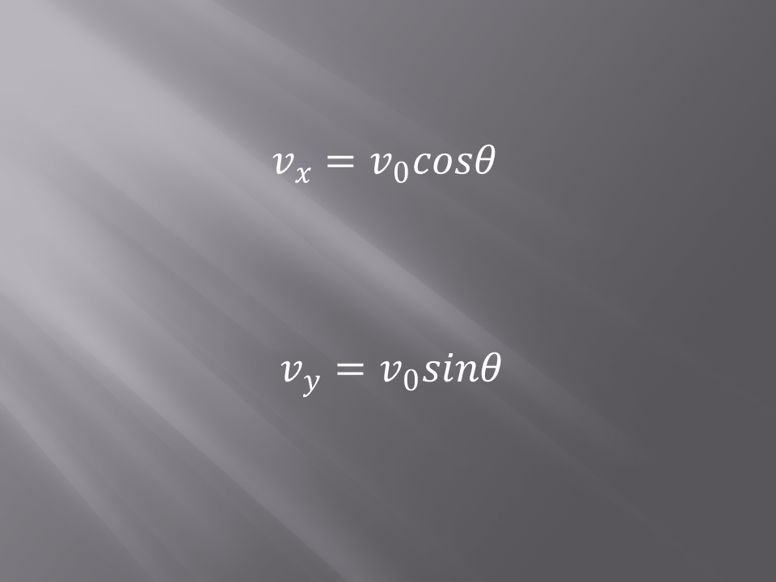
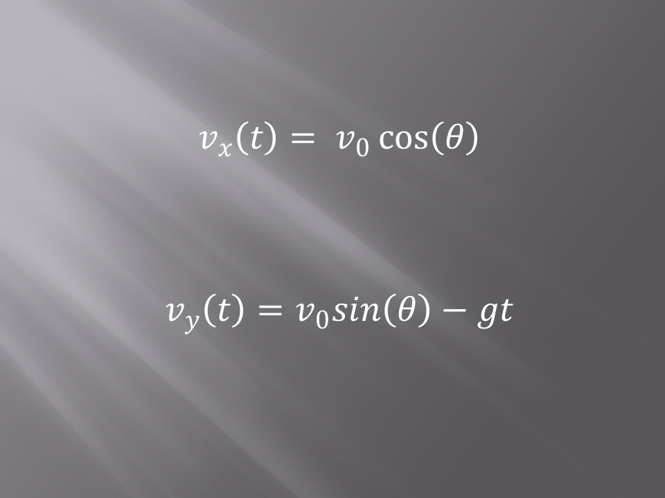
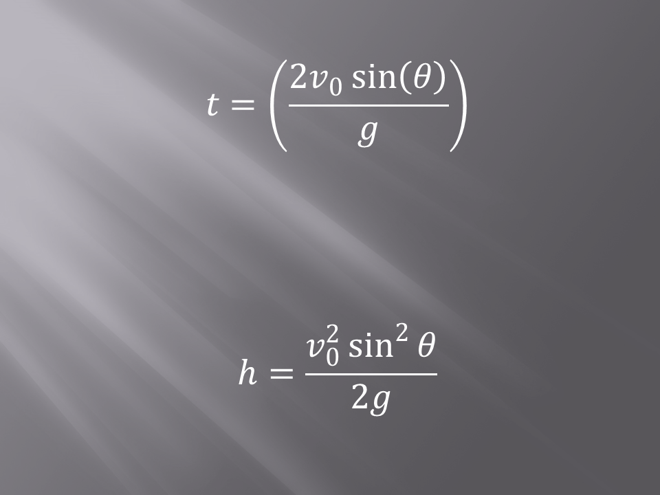
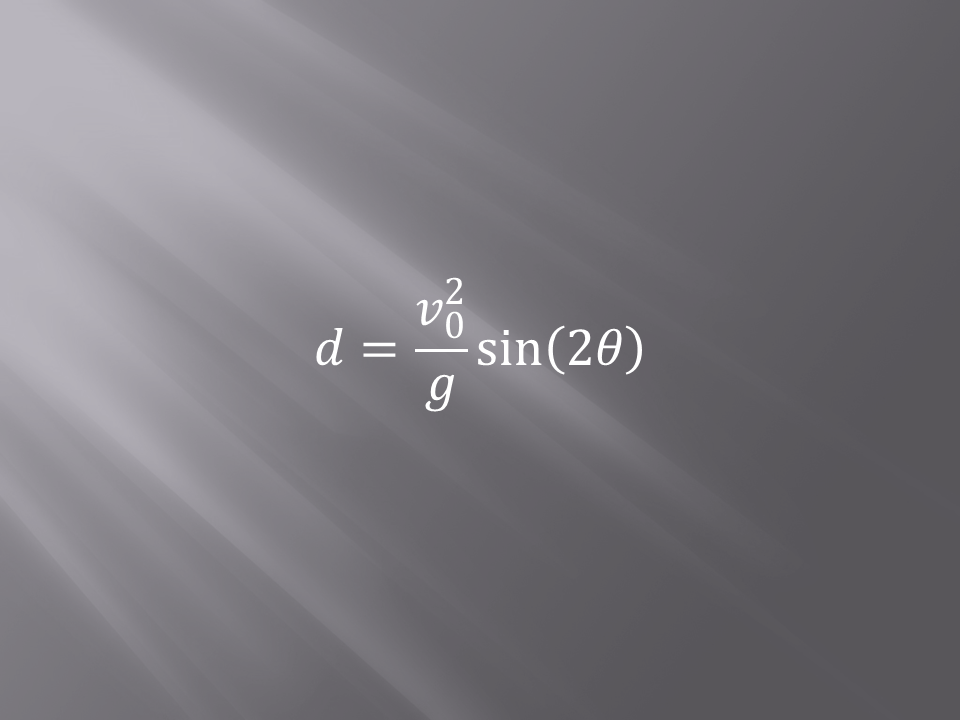

Page with buttons to all the equations...list all the equations on the bottom and link them from the buttons on top!.

The x component of the velocity for a projectile motion does not change because as the object moves through space there are no forces
that act on the object in the horizontal direction (assuming there is no friction such as wind resistance). Using the above equations
one can calculate the initial x and y components of the velocity. Which means the velocity of the projectile the moment it is launched.

During its flight, the object's components of velocity can be calculated using the above two equations. Notice the Vx, or the x
component of the velocity doesn't change anywhere during the flight as mentioned before. Since there are no external forces applied
the velocity in the x direction will not change. However, the only external force that is applied to an object in projectile motion is
gravity! Gravity will tend to pull the object downwards. So the term that is included in the equation tells us how much gravity changes
the y component of the velocity throughout the flight.
The displacement of an object can be determined at any given time of the flight by using the equations given above. Here
V0 is the initial velocity of the object, or the launching velocity. T is the time of interest, for instance where will the projectile
be after 10 secs. G is the constant used for gravity, the value of g is 9.81 m/s^2 or 32.2 ft/s^2. Theta is the launch angle.

If you were interested in calculating the total time of flight for a projectile or the maximum height the object will reach, you can
use the above equations. The derivation of these equations are not included in this presentation. But, if you are interested note that
these equations were derived from the previously presented equations.
